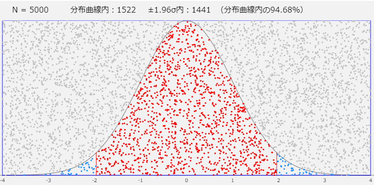

数値シミュレーションの世界
乱数を使ったアニメーションは楽しいのですが、誤解を招く恐れもあると感じていました。たとえば、確率変数ぷるぷるの「試作品1」は、1つの変数です。値が次から次へと表示されるので、たくさんの変数が次々に生まれているように見えてしまうかもしれませんが、あくまでも1つの変数です。
では、表示されている値は何かというと、「もしこの瞬間にスナップショットをとったら（つまりサンプリングを実行したら）、この値を返したのになあ…」という値です。乱数を得るとは、確率変数が、いまこのタイミングでサンプリングしたら、どのような値をとっただろうかという値を「仮想的な実現値」として得ることです。そして、その「タイミング」は次々に移り変わっていきます。
数値シミュレーションの世界
このようなぐるぐるした思考を整理してくれたのが、この本です。
数値シミュレーションで読み解く統計のしくみ～Rでためしてわかる心理統計：わたしが個人的にもっとも信頼する心理統計の先生がお二人とも（小杉先生、清水先生）著者に入っている本。もうこれ以上信頼できる本はない、と言いたい本です。
この本の中で、確率統計の理解に有用であるとして「数値シミュレーション」が推奨されています。統計ソフトRで大量の乱数を発生させ、それをプロットすることで、確率変数や確率分布のふるまいを理解するという方法です。少し引用しましょう。
データ生成過程からデータが生み出され、そのデータから分析するという一連の流れを仮想空間上で行うことも可能です。これをデータを取得する前に行いましょう、というのが本書で提案するシミュレーションの考え方です。（前掲書, p.17）
わたしがWeb上で提供したいと思っていたのは、この「データ生成過程」を視覚化する部分でした。Rのスクリプトで乱数を発生させることは、一瞬でできてしまいます。たとえ乱数10000個でも、それを生成するために要する時間は一瞬です。が、そこでどんな乱数が得られたのか、どのような範囲の値が、どのような分布で生成されたのか、ヒストグラムを描いたり、分布関数と比較してみたりするまでわかりません。これを、1つずつ、乱数が発生するたびにプロットし、つねに分布関数と比較できるようにすれば、乱数生成のプロセスがよくわかります。そして、プロットの密集度で、まさにどのあたりにデータが密集しやすいのか、どのあたりのデータは生成されにくいのかが一目瞭然です。
いくつかの重要概念
この本をもとに、本サイトでも使用しているいくつかの重要概念について、その意味を確認しておきます。
確率変数、確率分布
確率変数とは、ランダムに変化する数値（前掲書, p.114）
日常的には、ランダムというと「何の法則性もなしに」というニュアンスを感じるかもしれませんが、統計学ではむしろ、積極的に確率的な法則を仮定します。この確率的法則を、確率分布（probability distribution）と呼びます。（同, p.121）
投げられたサイコロ（公正なサイコロとします）は身近な確率変数の例で、「1～6の整数値が、同じ確率で出る」という確率的な法則が背後にあります。統計学でよくお目にかかる「正規分布」は、すべての実数値をとり得ますが、期待値の周辺の値が出現しやすいという法則があります。
期待値
確率変数のとりうる値に確率的法則が仮定できるとき、それらの値の「観測されやすさ」を考慮した加重平均（weighted mean）を期待値（expected value）と呼びます。（同, p.148）
たとえば公正なサイコロの場合、どの目も等しく1/6の「観測されやすさ」（確率）をもっていますから、\[\frac16\times 1+\frac16\times 2+\frac16\times3 + \frac16\times4 + \frac16\times 5+\frac16 \times 6 = 3.5\]がこの場合の期待値です。
ただし、正規分布のように実数値をとる確率分布の場合は、実数値一つひとつについて確率を考えることができません。実数はたとえ範囲を限定しても無限個ありますから、どんなに小さい確率を考えたところで、それを足し合わせれば1を超えてしまいます。そこで、とりうる値の範囲を考え、積分を用いて確率を計算します。が、正規分布の関数は見るからにごつい形をしていて、とても積分なんかする気になれません。そこで、シミュレーションの登場です。
モンテカルロ法
モンテカルロ法とは、ある確率的法則に従って大量の乱数を生成することで、計算の近似解を求める手法（同, p.140）
よく知られているのは、円に概説する正方形の内部に、乱数で生成した座標位置にドットを落とし、そのドットが円の内側にある割合を調べて、円の面積や円周率の近似解を調べるという方法があります。このとき、乱数の背後に「連続型一様分布」という確率的法則を仮定していることになります。一様分布とは、値によって観測されやすさには違いがないというものです。サイコロは離散型の一様分布でした。連続型の場合は、特定に値について確率を定められませんから、ある区間幅を考え、その幅をもった区間であれば、どの位置にあっても同じ確率で値が観測されると想定していることになります。次の試作品はその一例で、円ではなく正規分布曲線を用いています。

【モンテカルロ法】：モンテカルロ法をもちいて、正規分布の-1.96～1.96の範囲が、分布曲線とX軸に囲まれた部分全体の95％の面積であることを確かめています。
数値シミュレーションをp5で
というわけで、この本に登場する数々のシミュレーションを、出来得る限りp5.jsで可視化しよう、というのが、次なる目標になったのでした。